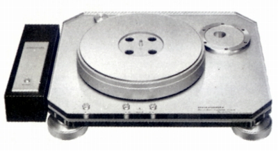
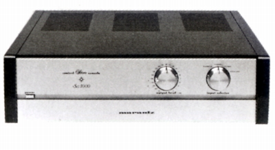
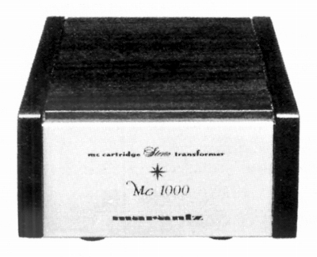
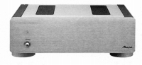
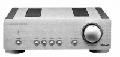
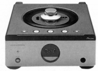
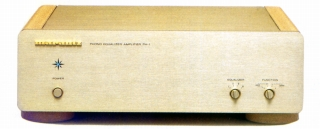
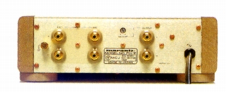
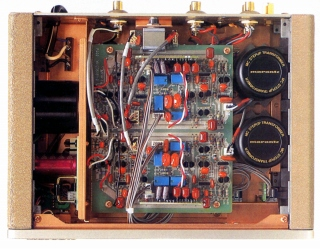

MARANTZ（マランツ）
アンプやＣＤプレーヤーを得意とする音響機器メーカー。1953年にソウル・バーナード・マランツ氏が設立したアメリカのブランドだが、企業売却を繰り返し、現在ではDENON(デノン）との経営統合をし、ディーアンドエムホールディングスという会社が作られ、マランツブランドの製品の企画・開発はこの会社のものとなっている。
アナログディスク関連には特に熱心ではなかったが、カタログにはプレイヤーをのせていた。中には美しいデザインの高級機も存在した。また1980年代前半のプリアンプの最上位機種「Sc1000」はMCカートリッジ対応でなかったため、MCカートリッジ昇圧トランスを用意していた。


(ダイレクトドライブターンテーブルTt1000LとプリアンプSc1000)
Mc1000

■価格 120,000円
■型式
MC型カートリッジ用昇圧トランス
■適合入力インピーダンス Low3Ω/High40Ω
■適合出力インピーダンス 47kΩ
■昇圧比 1:31.7(3Ω）/1;10(40Ω）
■周波数帯域
■クロストーク
■全高調波歪率
■重量 2.6kg
■寸法 W170×H88×D230�o
■発売
1982年12月
■販売終了 1988〜89年頃
■備考 価格は1982年頃のもの
ツイン・ハイミューコア、
0.6Ф無酸素銅線巻きコイル採用。
また1980年代末から展開していた小型のコンポーネントシリーズ（後にミュージックリンクシリーズと呼ばれる）のプリアンプがフォノ入力を持たない為、同系統のデザインのフォノイコライザーアンプを1991年に発売した。



(ミュージックリンクシリーズのパワーアンプ、プリアンプ及びCDプレイヤー)
PH-1



■価格 180,000円
■型式
フォノイコライザーアンプ
■入力レベル MC Low 0.1mV/3Ω MC High 0.3mV/100Ω
MM Low
3mV/1kΩ MM High 3mV/47kΩ
■出力レベル/インピーダンス 250mV/200Ω
■ＳＮ比 MM High
84dB、MC Low 76dB
■電源 AC100V
50/60Hz
■重量 4.7kg
■寸法 W250×H85×D215�o
■発売
1991年8月
■販売終了 1995〜98年頃
■備考 価格は1991年頃のもの
一般のレコードのRIAAイコライザーのほか、3種のＳＰ用EQポジションを持つ。